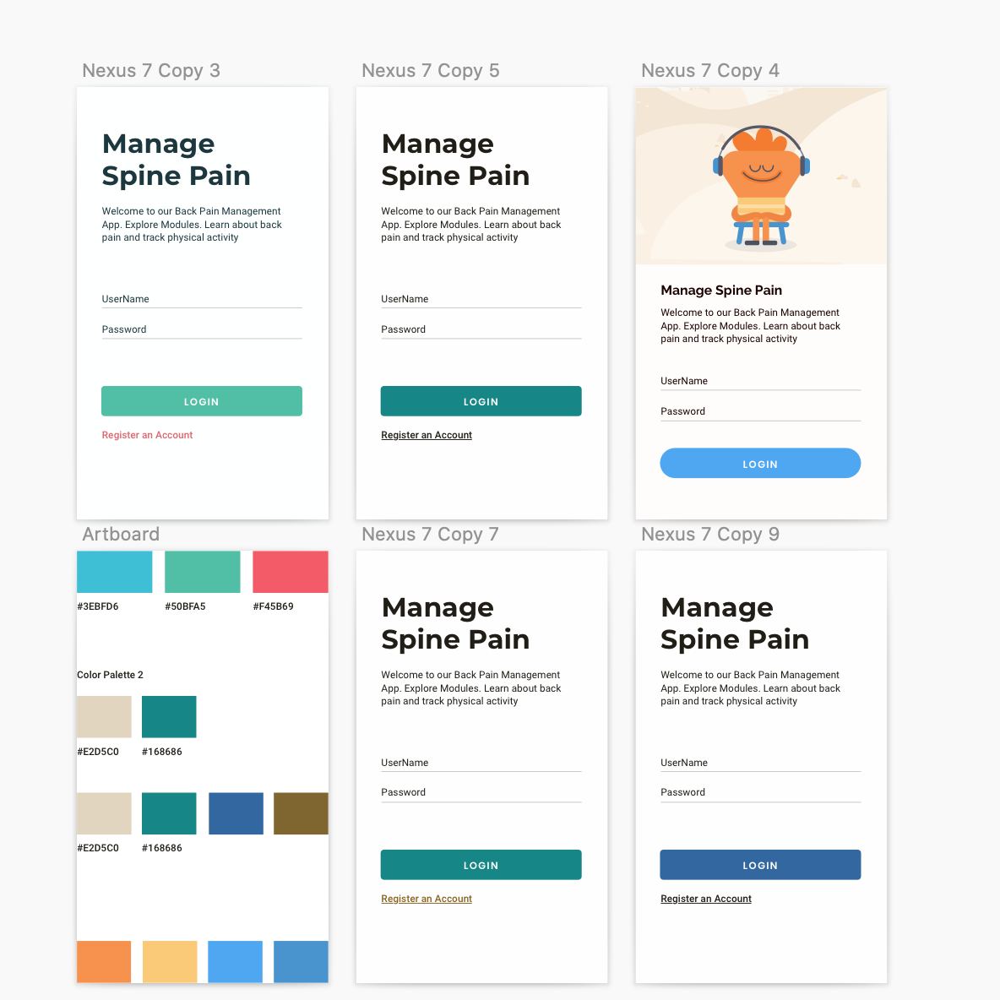
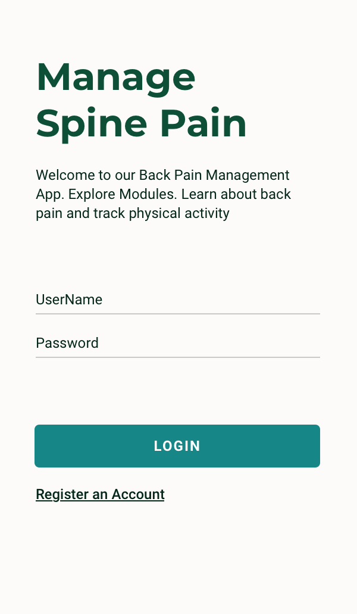
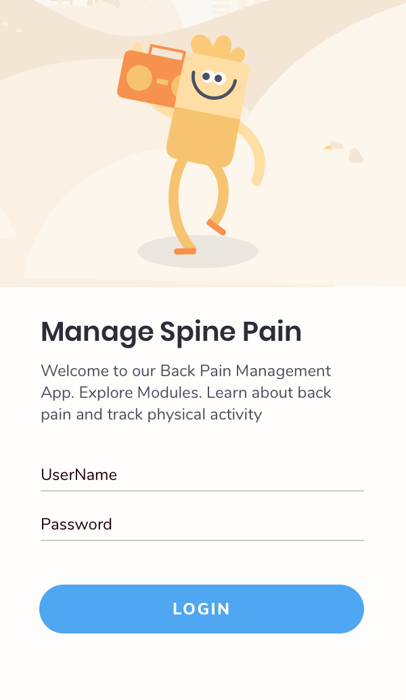

Spine App
introduction
The Spine App helps people with chronic back pain. It is part of a University of Connecticut research study. We were tasked to redesign the app to improve the user experience of managing chronic pain
Goal 1
Improve the usability of the Spine App
Goal 2
Give the Spine App a new visual design language
Goal 3
Create Learning Module Videos to inform users about chronic low back pain
Overview
Process:Initial User Flow, Information Architecture, Visual Design
Usability Tests
Researchers had already conducted user tests by asking participants to walk through case scenarios. They recored and audio and video to analyze results.
Key Insights and Opportunties
Users had trouble navigating the important tasks of understanding learning modules, logging physical activity,and tracking goals.
An opportunity is to improve the usability of the app to make it easier for users to fully engage in managing chronic back pain.
Not much time was dedicated to the visual design and feeling of the app.
An opportunity is to put in the time to develop a visual design language.
Video modules are not engaging to users to follow and complete activities.
An opportunity is to provide visualizations to help users learn about back pain.
User Flow

Information Architecuture

Visual Design




Redeisgning Video Learning Modules
TBD